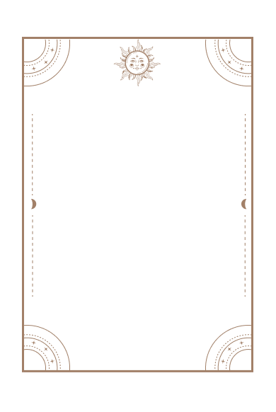
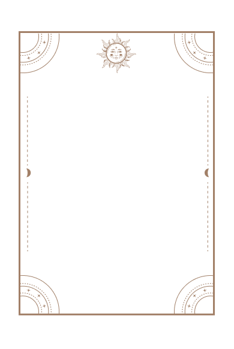

History of Zodiac Signs
黄道12星座の歴史は、古代の天文学と神話に起源を持っています。古代の人々は、
夜空に星座と呼ばれる星のグループを見つけ、それに名前を付けました。これらの星
座は、季節や暦、神話と結びつけられ、特別な意味を持つようになりました。
星座の名前や配置はさまざまな文化に由来していますが、黄道12星座の名前はギリ
シア神話に由来しています。ギリシア神話は、古代ギリシアの神々や英雄に関する物
語で、古代ギリシア文化の一部でした。これらの神話の中で、特定の神々やキャラク
ターが星座の名前として使われました。